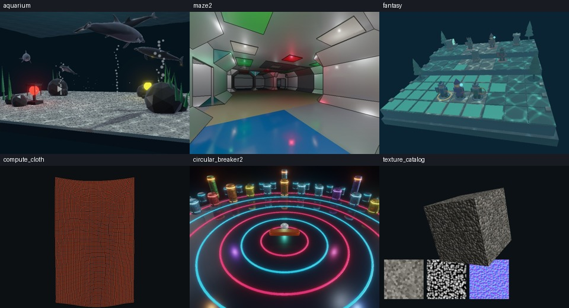

webg samples
Browse 65 runnable samples grouped by topic and linked to relevant book chapters. Samples within each topic are alphabetized by folder name. Read a short overview, launch an app, or open its detailed guide in English or Japanese.

How to use this catalog
New to webg? Start with the English example guide to choose a first sample and build toward a complete app. Each guide links runnable code with practical checks.
Run opens the sample app. Details opens its English guide, and 日本語 opens the Japanese guide. Use README to save the English Markdown source.
For focused browser checks, see the unittest catalog. Runnable examples from the book are listed in the book examples catalog. The Samples guide explains how samples, unittests, and headless tests differ.
To explore YAML scenes, start with ModelYAML, then try SceneYAML with ModelYAML. Use the SceneYAML editor to change placement, materials, and physics settings.
In samples that use WebgApp, press F9 to open the CommandPalette. Press M to switch between debug and release modes, C to show diagnostics, or V to copy diagnostic JSON.
Featured demos
LUMEN is an interactive gallery combining metallic and glass PBR, colored lights, Compute particles and physics, and music. Details
NEON COASTER follows four cars around a three-dimensional course with a city skyline and changing rails. Details
VOID STRIKE is a PBR 3D shooter with colored lights and Compute sparks. Details